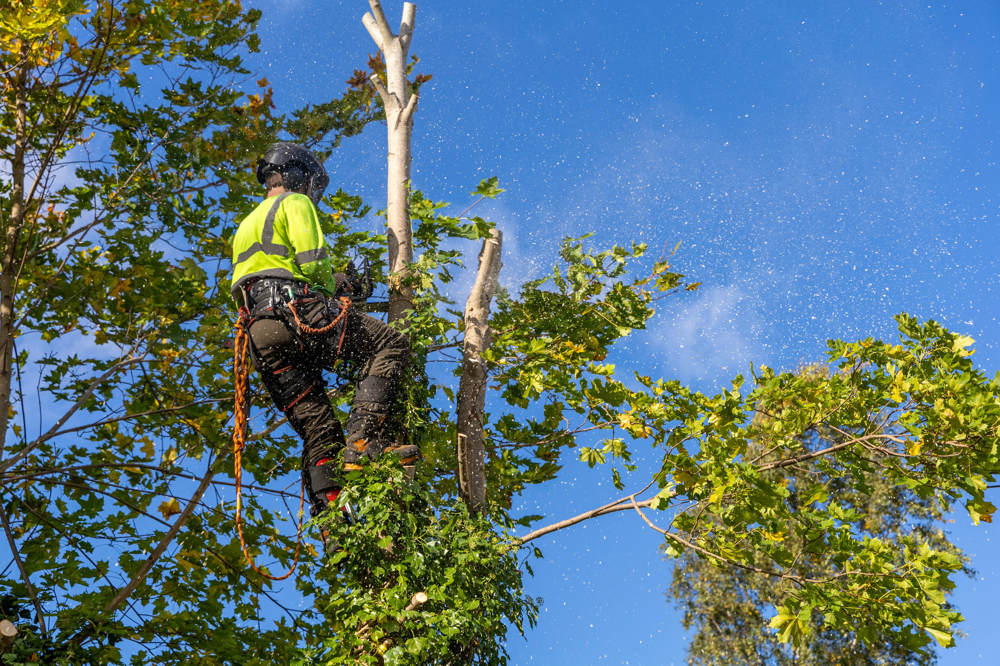

Dead or Dying Trees
Trees with major deadwood, decay, or no healthy growth can become unstable and dangerous.
Professional tree removal in Canberra by qualified arborists. Safe removal of dangerous, dead and storm-damaged trees.

Flora Tree Services provides safe and professional tree removal in Canberra for residential and commercial properties, making us a trusted choice for homeowners searching for tree removal near me. Our qualified arborists remove dangerous, dead, storm-damaged, and unwanted trees using modern equipment and proven safety methods.
Whether you need large tree removal, emergency tree removal after storm damage, or expert tree cutting in tight-access areas, our local Canberra arborist team delivers reliable and efficient tree services across Canberra and surrounding suburbs including Queanbeyan, Gungahlin, Belconnen, Tuggeranong, and Woden Valley.
What we do
Qualified arborists handling simple to complex removals with safe rigging, precise cuts, and a spotless clean-up.

We combine local expertise, safety-first practices, and fair pricing to deliver the best tree care in Canberra & Queanbeyan.
Free on-site inspections across Canberra and surrounding suburbs to assess the tree and recommend the safest removal option.
Qualified and fully insured arborists using professional climbing and rigging techniques for safe tree removal.
Reliable service for everything from emergency tree removal to routine tree care across Canberra.
Proudly serving Canberra, Queanbeyan, Googong and surrounding areas. We understand ACT tree regulations and can help homeowners determine whether approval may be required before removing or pruning certain trees.

“We called Flora Tree Services to remove and cut up a mature tree that died in our front yard. They responded promptly and politely. They turned up to fell the tree on schedule and took it down carefully and slowly respecting our garden and other trees. At all times they were polite, careful and safety conscious.”
“Excellent fast, emergency service today to remove half a tree which crashed onto our drive, making it impossible for us to drive out of our garage. Ibrahim is skilled, careful and very pleasant to deal with. Recommmended!☺️.”
“Ibrahim and his offsider removed two palm trees growing right next to my house. I was very impressed with the calm and easy way he went about the removal. He removed the top of the largest safely and then brought the rest down smartly and carefully to ensure paving wasn't damaged. All mess removed. Very happy.”
“Very friendly, professional, reasonably priced and above all, they did an amazing job. Would recommend anyday.”
“Excellent service which we will definitely use again. Thanks, Simon & Lucy”

We visit your property to inspect the tree's condition and recommend the safest removal method.
Our qualified arborists use advanced tools and proven techniques to remove trees safely — no matter how large, dead, or hazardous they may be.
We remove all branches and green waste from your property, leaving the area tidy and hazard-free.
We grind the stump below ground level to leave your yard flat and ready to use.
When Removal Is Needed
Tree removal may be necessary when a tree becomes unsafe, badly damaged, or starts affecting nearby structures. Our arborists assess each tree carefully and recommend removal only when it is the safest option.
Trees with major deadwood, decay, or no healthy growth can become unstable and dangerous.
Split trunks, broken limbs, and uprooted trees may need removal to make the area safe again.
Trees leaning toward houses, fences, sheds, or driveways can create serious structural risks.
Large roots can affect driveways, paths, foundations, retaining walls, and underground services.
Severe disease or infestations can weaken the tree and reduce its structural stability.
Our Canberra arborists near you can inspect the tree and recommend the safest solution, whether that means pruning, trimming, or full removal.
Professional Solutions
From tight-access removals to storm damage response, we tailor the safest method to your site, tree condition, and surrounding structures — with a clean finish every time. Our arborists also provide related services such as tree cutting, tree felling, pruning, hedge trimming and stump grinding across Canberra and Queanbeyan as part of our complete tree care services.
Large mature trees often require controlled dismantling using rigging and safe lowering techniques to protect roofs, fences, gardens and driveways.
Leaning, unstable, split or high-risk trees can pose serious safety hazards. We assess risk and use proven safety systems to remove hazardous trees safely.
Strong winds and storms can cause broken limbs or fallen trees. We provide fast hazard removal and storm clean-ups to make your property safe again.
Palm trees often require specialist removal due to their height and trunk structure. We dismantle palms safely and remove all debris from the site.
Deadwood and diseased trees can become brittle and unpredictable. We remove them safely and can advise on pruning or removal options to reduce risk.
Send photos for a quick estimate, or book a free on-site inspection in Canberra & surrounds.
Pricing
Tree removal pricing depends on the tree size, access, risk level, and the equipment required. We provide free inspections and clear quotes so you know exactly what's included before we start.
Every job is different, but as a general guide:
The quickest way to get an accurate estimate is to send photos (tree, base, access) and your suburb.
Need tree removal urgently? We provide emergency tree services across Canberra and nearby areas.
In addition to tree removal, our arborists can assist with tree pruning and optional stump grinding to fully clear the area once the tree is removed.
FAQ
Quick answers to common questions about tree removal, safety, approvals, and what's included.
Yes. If a tree is storm-damaged, leaning, or creating an immediate safety risk, we can assist with urgent callouts where available. Share photos and your suburb so we can advise the safest next step.
Some trees may be regulated or protected depending on size, species, or location. Requirements can vary, so we'll help you understand what may apply to your situation before work begins.
Timing depends on tree size, access, and complexity. Smaller removals can be completed quickly, while large or tight-access removals may take longer due to controlled dismantling and safety setup.
Yes. Large trees near structures are typically removed in sections using rigging and controlled lowering to protect roofs, fences, driveways and gardens.
We assess the tree, plan a safe removal method, complete the removal, and tidy the site. Green waste removal can be included, and timber can be left on request. We can also add stump grinding where suitable.
Stump removal is usually an optional add-on. If you'd like the stump ground below ground level, we can include stump grinding in your quote.
The fastest way is to send photos of the tree (full tree, base/trunk, and access path) and your suburb. For complex jobs, we'll recommend a free on-site inspection.
Yes — our arborists can assist with tree pruning and shaping, and can recommend the best option when removal isn't necessary.
Yes. In addition to Canberra, we provide tree removal services in Queanbeyan as well as surrounding areas including Jerrabomberra, Googong, and nearby NSW communities. Contact us or view our service areas
Regulations
Tree removal in the ACT is regulated to protect Canberra's urban forest. Some trees may require approval from the ACT Government before removal or major pruning.
Under ACT legislation, certain trees on private land are considered protected and may require approval before removal or significant pruning. In many cases, a tree may be protected if it meets criteria such as size, canopy width, or trunk circumference.
Trees that meet these criteria may be classified as regulated trees and may require approval before removal.
Some trees in Canberra are listed on the ACT Tree Register because of their environmental, heritage, scientific or cultural value. These trees are strongly protected and usually require formal approval before any pruning, removal or construction activity nearby.
If a tree is protected, homeowners generally need to submit a tree activity application through the ACT Government before removal or major pruning can take place.
Approval requirements can vary depending on the tree, location, and the reason for removal.
Trees located on public land such as verges, nature strips, parks and reserves are managed by the ACT Government and cannot be removed without official permission.
Regulations can change and each property is different. If you are unsure whether a tree requires approval, our team can provide guidance during a quote or site inspection.